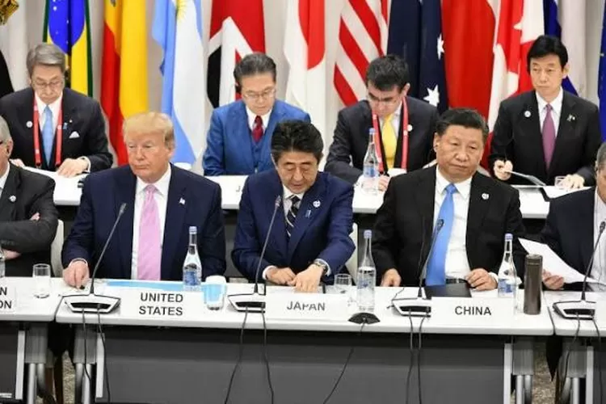
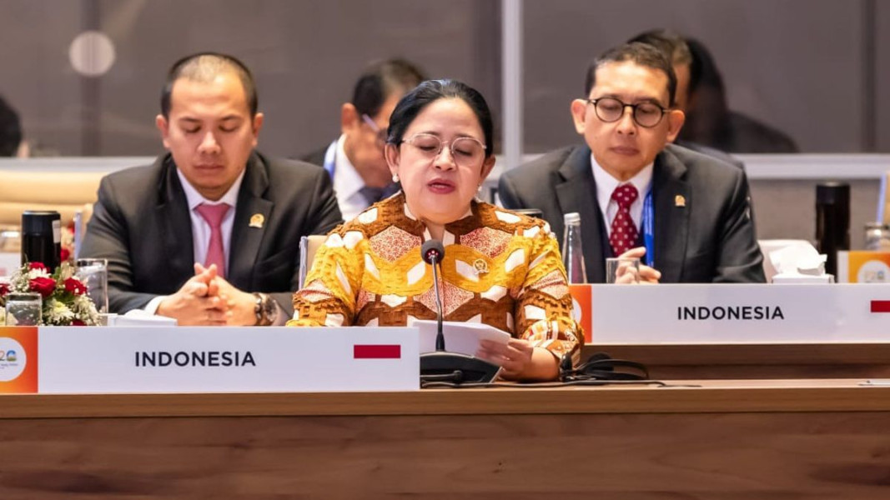
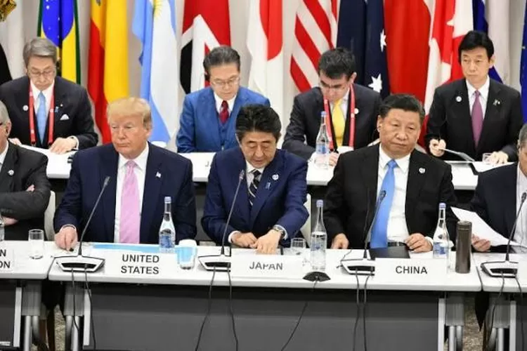
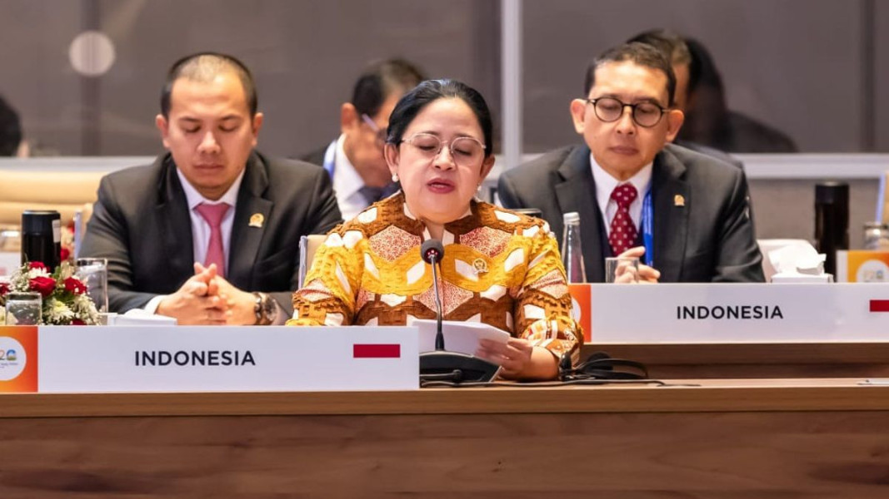

Penjelasan
Kerja sama multilateral menghadapi berbagai isu yang kompleks dan sering kali melibatkan kepentingan yang
berbeda antarnegara. Isu-isu ini bisa mencakup berbagai sektor, mulai dari ekonomi hingga politik,
keamanan, lingkungan, dan hak asasi manusia. Berikut adalah beberapa isu utama dalam kerja sama
multilateral yang relevan dengan dinamika global saat ini:
A. Perubahan Iklim dan Keberlanjutan Lingkungan
Perubahan iklim adalah salah satu isu paling mendesak dalam kerja sama multilateral. Negara-negara di
seluruh dunia menghadapi tantangan besar terkait pemanasan global, peningkatan bencana alam, dan
penurunan kualitas lingkungan hidup. Kesepakatan internasional seperti Perjanjian Paris berupaya untuk
mengurangi emisi gas rumah kaca dan memitigasi dampak perubahan iklim. Namun, ketegangan sering muncul
karena perbedaan antara negara-negara maju yang memiliki sejarah emisi tinggi dan negara-negara
berkembang yang lebih rentan terhadap dampak perubahan iklim. Negara-negara besar, seperti Amerika
Serikat dan Tiongkok, memiliki peran kunci dalam mencapai kesepakatan yang efektif.
B. Perdagangan Internasional dan Proteksionisme
Dalam kerja sama multilateral, isu perdagangan internasional menjadi topik utama, terutama terkait
dengan hambatan perdagangan seperti tarif, kuota, dan proteksionisme. Organisasi seperti WTO berusaha
mengurangi hambatan ini untuk menciptakan sistem perdagangan yang lebih bebas dan adil. Namun, kebijakan
proteksionis yang diterapkan oleh negara-negara besar, seperti tarif tinggi atau pembatasan impor,
sering kali memicu ketegangan dalam hubungan multilateral dan menghambat pertumbuhan ekonomi global.
Negara-negara berkembang juga sering mengkritik kebijakan perdagangan yang dianggap tidak menguntungkan
bagi mereka, terutama dalam sektor pertanian dan industri.
C. Ketidaksetaraan Ekonomi dan Pembangunan Inklusif
Ketimpangan ekonomi global tetap menjadi isu penting dalam kerja sama multilateral. Negara-negara
berkembang sering kali merasa dirugikan dalam sistem perdagangan internasional yang dikuasai oleh
negara-negara maju. Isu ini mencakup ketidaksetaraan dalam akses pasar, bantuan pembangunan, dan
kesenjangan antara negara kaya dan miskin. Organisasi internasional seperti Bank Dunia dan Dana Moneter
Internasional (IMF) memiliki peran penting dalam memberikan dukungan finansial dan teknis kepada
negara-negara berkembang untuk mendukung pembangunan yang berkelanjutan dan inklusif. Namun, sering kali
ada kritik terhadap kebijakan yang dianggap lebih menguntungkan negara donor dibandingkan dengan negara
penerima bantuan.
D. Keamanan Internasional dan Konflik Global
Isu keamanan adalah aspek penting dalam kerja sama multilateral, terutama dalam menjaga perdamaian dunia
dan mencegah konflik antarnegara. PBB dan organisasi seperti NATO berperan dalam menangani masalah ini
melalui misi penjaga perdamaian dan diplomasi internasional. Namun, ketegangan geopolitik yang
meningkat, seperti dalam konflik di Timur Tengah atau persaingan antara kekuatan besar seperti Amerika
Serikat dan Tiongkok, sering kali menghalangi upaya-upaya multilateral untuk menciptakan solusi yang
berkelanjutan. Selain itu, terorisme, proliferasi senjata nuklir, dan ancaman siber juga menjadi
tantangan besar bagi keamanan internasional.
E. Migrasi dan Pengungsi
Krisis migrasi dan pengungsi adalah isu besar dalam kerja sama multilateral, terutama terkait dengan
gelombang migrasi akibat konflik, perubahan iklim, dan ketidakstabilan politik. Negara-negara di Eropa,
Amerika Utara, dan Asia Tenggara menghadapi tantangan dalam menangani pengungsi dan migran yang datang
dari negara-negara yang dilanda perang atau bencana alam. Isu ini memunculkan ketegangan mengenai
pembagian tanggung jawab antara negara-negara tujuan migrasi dan negara-negara asal. Organisasi
internasional seperti UNHCR berusaha memberikan perlindungan kepada pengungsi, namun sering kali ada
perbedaan pandangan mengenai bagaimana menangani masalah ini secara adil dan manusiawi.
F. Hak Asasi Manusia dan Demokrasi
Kerja sama multilateral juga berhubungan erat dengan isu hak asasi manusia dan demokrasi. PBB dan
organisasi internasional lainnya berusaha untuk mempromosikan dan melindungi hak-hak individu, seperti
kebebasan berbicara, hak untuk berpartisipasi dalam pemerintahan, dan perlindungan terhadap minoritas.
Namun, beberapa negara berpendapat bahwa masalah hak asasi manusia adalah urusan internal dan menolak
campur tangan luar. Ketegangan ini sering kali muncul dalam forum-forum internasional, terutama dalam
pengambilan keputusan yang melibatkan sanksi terhadap negara yang dianggap melanggar hak asasi manusia.